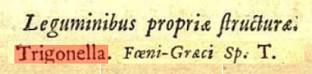
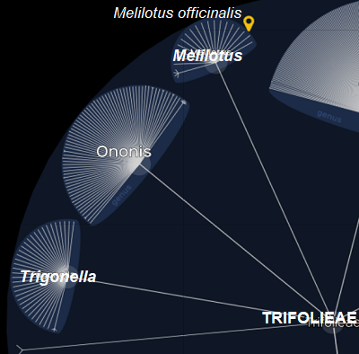
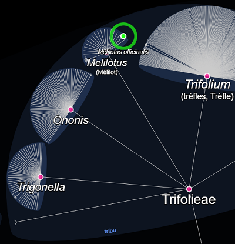

MELILOTUS officinalis Lam.,
Mélilot jaune, mélilot officinalDans l'Yonne
- Très commun. C'est une plante calcicole et xérophile.
- Mode de vie : bisannuel.
- Période de floraison approximative :
Juin-Juillet-Août.
- Habitat : Champs et lieux incultes, bord des chemins, talus.
- Tailles :
 40 à 80 cm 40 à 80 cm
 ± 3 sur 5 mm. ± 3 sur 5 mm.
Origine supposée des noms
- Melilotus officinalis Lam., 1779
- Nom générique : du grec μέλι (mèli), miel, et λωτός (lôtós), lotier. Ses fleurs, abstraction faite de ses inflorescences, ressemblent à celles des lotiers (Cf. Lotus corniculatus) et ont une odeur de miel.
En français, dans certaines régions, on nommait cette plante : mélilot des champs ou trèfle de cheval. - spécifique : adjectif latin médiéval indiquant des propriétés médicinales.
Synonymie récente
- Trigonella officinalis (L.) Coulot & Rabaute, 2013 :
- générique : diminutif latin de trigona, triangulaire. C'est le genre du fenugrec, Trigonella foenum-graecum L., 1753, déjà cité par Linné dans son Systema Naturae de 1744 :

Mais le nom Melilotus est toujours d'actualité en 2025.

© Lifemap

© Lifemap
Détails caractéristiques
- Sa tige dressée, ramifiée et touffue, se lignifiant en vieillissant.
- Les longs pétioles de ses feuilles à folioles allongées.
- Ses petites fleurs jaunes en grappes étroites très nectarifères et dont les grains de pollen longiaxes sont de taille moyenne.
- Ses fruits qui sont des gousses vertes devenant brunes, à rides transversales.
- La forme réniforme de ses graines.
- C'est une plante qui contient de la coumarine qui lui fait perdre en séchant l'odeur caractéristique de miel qu'elle répand dans les campagnes et lui donne alors un parfum de vanille mêlé à d'autres senteurs.
Nombre d'espèces icaunaises dans le genre
|


{kind=link}
{kind=link}
{kind=link}